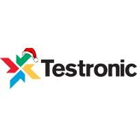

Personal Information
116 Victor Rauter Straat, Brussels 1070, Anderlecht
Phone +32485489739
Citizenship: Belgian
Male
Date of birth: 25th March 1983
Hanesananhouvannasak@googlemail.com
Languages
- French
- Native
- English
- Fluent
- Laotian
- Speaking proficiency
- Japanese
- Proficient
- Dutch
- Intermediate
- German
- Beginner
Education
- Institut des carrières commerciales
- Graduated in Marketing and Communication
- EPHEC, Ecole Pratique des Hautes Etudes Commerciales
- Marketing and Communication
- ICHEC, Brussels Management School
- Business Engineering
Technical Skills/Proficiencies
- Organisational Skills: Proven ability to work to stringent deadlines, assigning priorities, planning and time management. Ability to strategically and tactically coordinate a team
- Computer literate, Internet expert. Microsoft Office, Outlook, Lotus Note, iNotes, Sharepoint, RightNow, Jira/SHIP, Capone, GAD, RCST, NCST, PAcMan, SVO, Player Connect, GeoNet
- Practical knowledge of Java, Photoshop, Corel Paint Shop Pro, GIMP and video editing with Sony Vegas Pro
- Knowledge of HTML, CSS, PHP and JavaScript
- Use of database: Bugzilla, Lams, Devtrack
- Other IT skills: Hardware installation, software configuration, update, network installation and support
Objective
Main objective is to build a successful career in the digital/technology industry by continually developing and learning new skills.
Personal Profile
Motivated and optimistic with an analytical mind and sense of creativity.
Overcomes challenges through a tenacious approach and consistently works to the highest professional standards and thrives when working either independently or as part of a cohesive team to deliver consistent result
Experience
| [2016 - 2019] | Sony Interactive Entertainment Europe Ltd. |
Gaming industry | London, United Kingdom |
Junior Manager – Safety & Moderation (Resource and Performance)
- Team Supervision - Performance analysis. Provide support/ongoing training for in-house safety staff
- Daily communication with, and support for, vendor operations
- Account management; warnings, suspensions and bans on relevant PlayStation®Network accounts
- Respond to escalations from around the SIEE business and queries escalated from consumer services – tier 4 level
- Perform analysis on escalations of users’ behaviour issued from 1st and 3rd Party and take any necessary account action
- Low-level analysis of performance issues – deep-dive and pinpoint performance shortfalls and identify the why/when/how
- Manage performance at individual level – identify high/low performers and make recommendations to achieve KPIs
- UX experience - Propose tooling/workflow/process improvements for enhancement of productivity efficiency
- Participate in recruitment, arrange contract renewals and identify areas of strength/weakness/opportunities for further development
| [2013 - 2016] | Sony Interactive Entertainment Europe Ltd. |
Gaming industry | London, United Kingdom |
Moderation Specialist
- Project management & Supervision of Sony Computer Entertainment Europe moderation team
- SCEE MRM Online Analytics
- Liaising with other departments within Sony Computer Entertainment International worldwide business (SNEE, SNEI, SCEI, SCEA, SCEJ, SCEAsia, WWS OTG, WWS GFPQA, SNEI NOC)
- Moderation of PlayStation®Network, official platforms, various media and games
- Involved in testing and enhancement of moderation tools, SCE Platforms software and Playstation®4 firmware
| [2012 - 2013] | Sony Computer Entertainment Europe Ltd. |
Gaming industry | London, United Kingdom |
Community Coordinator
- Community Management of French speaking territories within Europe (Belgium, France, Luxembourg, Switzerland)
- Delivery of European PR campaigns to the French speaking SCEE market across PlayStation Forum, Blog and 3rd party social media channel.
- Liaising with 3rd parties; Planning, promoting and holding online events and/or competitions on PlayStation channels
- Branding and products promotion on social media (twitter: @IOtaSan) and PlayStation Forum
- Analysis & strategy of social media and official PlayStation channels goals and KPIs
- PlayStation Online support and Customer services, escalation of any issues via RightNow tool
| [2011 - 2012] | Testronic Laboratories Ltd. |
Digital Media/ Movie & Gaming industry | London, United Kingdom |

QA Localisation technician
- QA Localisation of websites and games addressed to the French speaking market.
- Game localisation testing for Sony Computer Entertainment, Square Enix, Eidos interactive, Capcom, Nintendo, Sega and Riot Game.
- Entering bugs addressed to developers via Devtrack or Bugzilla, Lams; QA of bugs regression
| [2011] | Markco Media Ltd. |
Digital Media/ E-commerce | London, United Kingdom |
Online Content Administrator
- Responsible for maintaining and updating the content of the French website of www.myvouchercodes.co.uk (www.codespromotion.fr)
- Liaising with all partners within the affiliation system
- SEO, keywords strategy and phrasing. Greatest achievement, Google page rank 9/10 after Google Panda update